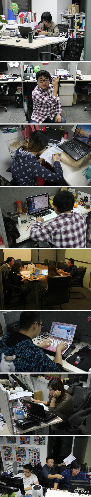

@BLUG_BJ 北京Linux用户组主席Martin来访，陪同合影的是CSDN做开源社区运营和开源技术推广的两位新同事 @Orson_Zhai 翟京 @爱开源的胖给给 佟辉 。这个月末有BLUG聚会，咱到时去参和下。
转一圈的话，还可以拍到更多加班的同事。[呵呵]@CSDN:#MDCC#距离2013移动开发者大会召开还有不到一周的时间，为了给大家献上最顶级最完美的盛会，小伙伴们已经辛勤工作N多个白天黑夜了。一起来瞧瞧正在加班的小伙伴们吧~！ 
需要的话，CSDN可以提供“程序员”戳，以验正身。 //@菁海吴:csdn有帐号吗？（有CSDN帐号的可以登录你的程序员网站。）什么？没有！chinaunix有吗？什么没有？！ITPUB？其它你类推吧，好累。@Easy:认真的问大家一个问题，有没有一个好方法可以识别上网站的用户是不是程序员？（ 没有女朋友这种特征浏览器识别不了啊……
问答产品的#社区运营#，这会儿才有了些思路：储备专家，激励用户提问，运营人员人工或技术手段匹配问题与专家，专家荣誉值曝光并分享到社交平台，精彩内容推荐推送到更多地方。— 其实就是知乎的做法。但也晚了，开始的短板就没补上: 储备专家，并有最早的忠实种子用户。